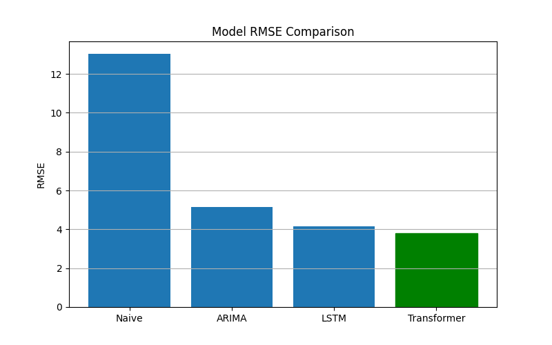

Machine Learning Time Series Forecasting Project
Electricity demand forecasting plays an important role in energy planning and power grid management. Accurate predictions help utility providers optimize generation, reduce operational costs, and ensure stable power distribution.
Traditional forecasting techniques such as ARIMA have been widely used for time series prediction. However, modern deep learning models like LSTM and Transformer architectures have demonstrated strong performance in capturing complex sequential patterns.
In this project we compare classical statistical methods with deep learning models to evaluate which approach produces the most accurate electricity production forecasts.
The dataset used in this project is the Electricity Production dataset. It contains historical monthly electricity generation values over several years.
| Column | Description |
|---|---|
| Date | Timestamp of electricity production |
| Value | Electricity production index |
The dataset exhibits seasonal patterns and long-term trends, making it suitable for evaluating time-series forecasting models.
The forecasting pipeline used in this project consists of the following stages:
Sliding window forecasting converts time-series data into supervised learning samples. For example, if the context window is 24 months and the prediction horizon is 12 months, the model learns to predict the next 12 months using the previous 24 months of data.
The naive baseline predicts the future value using the last observed value. This provides a benchmark to evaluate the effectiveness of more advanced models.
ARIMA (AutoRegressive Integrated Moving Average) is a statistical model that captures linear relationships in time-series data using past values and error terms.
LSTM (Long Short-Term Memory) networks are recurrent neural networks designed to capture long-term dependencies in sequential data using memory cells and gating mechanisms.
Transformer models use attention mechanisms to learn relationships between different time steps in the sequence. This allows them to capture long-range temporal dependencies effectively.
| Parameter | Value |
|---|---|
| Context Length | 24 |
| Prediction Horizon | 12 |
| Epochs | 50 |
| Batch Size | 32 |
Mini-batch gradient descent was used during training to stabilize learning and improve convergence.
Model performance is evaluated using Root Mean Square Error (RMSE).
RMSE measures the average magnitude of prediction errors and is defined as:
RMSE = √( mean( (actual − predicted)² ) )
Lower RMSE values indicate better model performance.
| Model | RMSE |
|---|---|
| Naive | 13.02 |
| ARIMA | 5.16 |
| LSTM | 4.15 |
| Transformer | 3.81 |
The Transformer model achieved the lowest RMSE and produced the most accurate predictions.
The following graph shows the comparison of RMSE values across different models.

An interactive dashboard was built using Streamlit to visualize predictions and compare model performance dynamically.
Users can adjust parameters such as context length, prediction horizon, and training epochs to observe how these changes affect model performance.
Open Streamlit DashboardThis project demonstrates the effectiveness of deep learning methods for time-series forecasting. Among the models tested, the Transformer architecture achieved the best performance by effectively capturing long-range temporal dependencies.